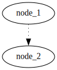

Networks for developing
Putting the works into networks
Neale Swinnerton
2023-01-18
Prerequisites
net-toolspackage (ifconfig(8),route(8),arp(8)andnetstat(1)et al.) has been deprecated for over 10 years.- prefer
iproute2package. All functions of net-tools and more are available. - Standardised interface and output. Also
--jsonoption makes parsing nicer.
Terminology
ip link<<<<<<< HEAD
||||||| parent of 46d680f (Final build.) #+begin_src routeros ======= #+BEGIN_link1 #+begin_example shell :wrap src routeros :exports both :results verbatim ip link show #+end_example #+begin_src routeros >>>>>>> 46d680f (Final build.) 1: lo: <LOOPBACK,UP,LOWER_UP> mtu 65536 qdisc noqueue state UNKNOWN mode DEFAULT group default qlen 1000 link/loopback 00:00:00:00:00:00 brd 00:00:00:00:00:00 2: wg0: <POINTOPOINT,NOARP> mtu 1420 qdisc noop state DOWN mode DEFAULT group default qlen 1000 link/none 3: enp88s0: <NO-CARRIER,BROADCAST,MULTICAST,UP> mtu 1500 qdisc mq state DOWN mode DEFAULT group default qlen 1000 link/ether 48:21:0b:36:d3:08 brd ff:ff:ff:ff:ff:ff 4: wlo1: <BROADCAST,MULTICAST,UP,LOWER_UP> mtu 1500 qdisc noqueue state UP mode DORMANT group default qlen 1000 link/ether 84:7b:57:20:f9:54 brd ff:ff:ff:ff:ff:ff altname wlp0s20f3 5: tun0: <POINTOPOINT,MULTICAST,NOARP,UP,LOWER_UP> mtu 1500 qdisc fq_codel state UNKNOWN mode DEFAULT group default qlen 500 link/none#+ENDlink1
ip link show #when docker running
<<<<<<< HEAD
parent of 46d680f (Final build.) =====>>>>>>> 46d680f (Final build.)1: lo: <LOOPBACK,UP,LOWER_UP> mtu 65536 qdisc noqueue state UNKNOWN mode DEFAULT group default qlen 1000 link/loopback 00:00:00:00:00:00 brd 00:00:00:00:00:00 2: wg0: <POINTOPOINT,NOARP> mtu 1420 qdisc noop state DOWN mode DEFAULT group default qlen 1000 link/none 3: enp88s0: <NO-CARRIER,BROADCAST,MULTICAST,UP> mtu 1500 qdisc mq state DOWN mode DEFAULT group default qlen 1000 link/ether 48:21:0b:36:d3:08 brd ff:ff:ff:ff:ff:ff 4: wlo1: <BROADCAST,MULTICAST,UP,LOWER_UP> mtu 1500 qdisc noqueue state UP mode DORMANT group default qlen 1000 link/ether 84:7b:57:20:f9:54 brd ff:ff:ff:ff:ff:ff altname wlp0s20f3 5: tun0: <POINTOPOINT,MULTICAST,NOARP,UP,LOWER_UP> mtu 1500 qdisc fq_codel state UNKNOWN mode DEFAULT group default qlen 500 link/none 6: br-838b7f23bb93: <NO-CARRIER,BROADCAST,MULTICAST,UP> mtu 1500 qdisc noqueue state DOWN mode DEFAULT group default link/ether 02:42:82:04:a9:90 brd ff:ff:ff:ff:ff:ff 7: br-88ded7088275: <NO-CARRIER,BROADCAST,MULTICAST,UP> mtu 1500 qdisc noqueue state DOWN mode DEFAULT group default link/ether 02:42:66:71:f3:b8 brd ff:ff:ff:ff:ff:ff 8: docker0: <NO-CARRIER,BROADCAST,MULTICAST,UP> mtu 1500 qdisc noqueue state DOWN mode DEFAULT group default link/ether 02:42:38:a1:bf:e9 brd ff:ff:ff:ff:ff:ffip --pretty --json link show enp88s0 # also see --details flag[ { "ifindex": 3, "ifname": "enp88s0", "flags": [ "BROADCAST","MULTICAST","UP","LOWER_UP" ], "mtu": 1500, "qdisc": "mq", "operstate": "UP", "linkmode": "DEFAULT", "group": "default", "txqlen": 1000, "link_type": "ether", "address": "48:21:0b:36:d3:08", "broadcast": "ff:ff:ff:ff:ff:ff" } ]
Terminology
ip addr show [devname]
4: wlo1: <BROADCAST,MULTICAST,UP,LOWER_UP> mtu 1500 qdisc noqueue state UP group default qlen 1000 link/ether 84:7b:57:20:f9:54 brd ff:ff:ff:ff:ff:ff altname wlp0s20f3 inet 192.168.1.177/24 metric 1024 brd 192.168.1.255 scope global dynamic wlo1 valid_lft 80828sec preferred_lft 80828sec inet6 2a00:23c7:621c:f201:867b:57ff:fe20:f954/64 scope global dynamic mngtmpaddr noprefixroute valid_lft 263sec preferred_lft 83sec inet6 fe80::867b:57ff:fe20:f954/64 scope link valid_lft forever preferred_lft forever#+ENDwlo1
#+begintun0
ip addr show dev tun0 >>>>>>> 46d680f (Final build.)5: tun0: <POINTOPOINT,MULTICAST,NOARP,UP,LOWER_UP> mtu 1500 qdisc fq_codel state UNKNOWN group default qlen 500 link/none inet 172.16.146.116/26 brd 172.16.146.127 scope global tun0 valid_lft forever preferred_lft forever inet6 fe80::a9bc:8cdc:23b7:7607/64 scope link stable-privacy valid_lft forever preferred_lft forever5: tun0: <POINTOPOINT,MULTICAST,NOARP,UP,LOWER_UP> mtu 1500 qdisc fq_codel state UNKNOWN group default qlen 500 link/none inet 172.16.146.116/26 brd 172.16.146.127 scope global tun0 valid_lft forever preferred_lft forever inet6 fe80::a9bc:8cdc:23b7:7607/64 scope link stable-privacy valid_lft forever preferred_lft forever2: wg0: <POINTOPOINT,NOARP,UP,LOWER_UP> mtu 1420 qdisc noqueue state UNKNOWN group default qlen 1000 link/none inet 10.9.0.7/24 metric 512 scope global wg0 valid_lft forever preferred_lft forever<<<<<<< HEAD
parent of 46d680f (Final build.) #+ENDwg0
ip addr show dev enp88s03: enp88s0: <BROADCAST,MULTICAST,UP,LOWER_UP> mtu 1500 qdisc mq state UP group default qlen 1000 link/ether 48:21:0b:36:d3:08 brd ff:ff:ff:ff:ff:ff inet 192.168.1.99/24 metric 512 brd 192.168.1.255 scope global dynamic enp88s0 valid_lft 80719sec preferred_lft 80719sec inet6 2a00:23c7:621c:f201:4a21:bff:fe36:d308/64 scope global dynamic mngtmpaddr noprefixroute valid_lft 263sec preferred_lft 83sec inet6 fe80::4a21:bff:fe36:d308/64 scope link valid_lft forever preferred_lft forever=====#+ENDwg0ip addr show dev enp88s03: enp88s0: <BROADCAST,MULTICAST,UP,LOWER_UP> mtu 1500 qdisc mq state UP group default qlen 1000 link/ether 48:21:0b:36:d3:08 brd ff:ff:ff:ff:ff:ff inet 192.168.1.99/24 metric 512 brd 192.168.1.255 scope global dynamic enp88s0 valid_lft 80719sec preferred_lft 80719sec inet6 2a00:23c7:621c:f201:4a21:bff:fe36:d308/64 scope global dynamic mngtmpaddr noprefixroute valid_lft 263sec preferred_lft 83sec inet6 fe80::4a21:bff:fe36:d308/64 scope link valid_lft forever preferred_lft foreversipcalc 172.16.146.116/26-[ipv4 : 172.16.146.116/26] - 0 [CIDR] Host address - 172.16.146.116 Host address (decimal) - 2886767220 Host address (hex) - AC109274 Network address - 172.16.146.64 Network mask - 255.255.255.192 Network mask (bits) - 26 Network mask (hex) - FFFFFFC0 Broadcast address - 172.16.146.127 Cisco wildcard - 0.0.0.63 Addresses in network - 64 Network range - 172.16.146.64 - 172.16.146.127 Usable range - 172.16.146.65 - 172.16.146.126 ->>>>>>> 46d680f (Final build.)
<<<<<<< HEAD
Terminology
- protocols
Terminology
- routes
Terminology
- bridges
Terminology
- tun devices
Terminology
- Miscellaneous
MTUQDISCQLENSO_LINGERSO_NODELAY
| parent of 46d680f (Final build.) |
ip route
ip route show | grep -v tun0
default via 192.168.1.254 dev enp88s0 proto dhcp src 192.168.1.99 metric 512
default via 192.168.1.254 dev wlo1 proto dhcp src 192.168.1.177 metric 1024
10.9.0.0/24 dev wg0 proto kernel scope link src 10.9.0.7 metric 512
10.42.10.0/24 dev br-46b699d0a4fe proto kernel scope link src 10.42.10.1
172.18.0.0/16 dev br-88ded7088275 proto kernel scope link src 172.18.0.1 linkdown
172.26.0.0/24 dev docker0 proto kernel scope link src 172.26.0.1 linkdown
192.168.1.0/24 dev enp88s0 proto kernel scope link src 192.168.1.99 metric 512
192.168.1.0/24 dev wlo1 proto kernel scope link src 192.168.1.177 metric 1024
192.168.1.254 dev enp88s0 proto dhcp scope link src 192.168.1.99 metric 512
192.168.1.254 dev wlo1 proto dhcp scope link src 192.168.1.177 metric 1024
213.218.143.135 via 192.168.1.254 dev enp88s0
routel | grep -v tun0
Dst Gateway Prefsrc Protocol Scope Dev Table
default 192.168.1.254 192.168.1.99 dhcp enp88s0
default 192.168.1.254 192.168.1.177 dhcp wlo1
10.9.0.0/24 10.9.0.7 kernel link wg0
10.42.10.0/24 10.42.10.1 kernel link br-46b699d0a4fe
172.18.0.0/16 172.18.0.1 kernel link br-88ded7088275
172.26.0.0/24 172.26.0.1 kernel link docker0
192.168.1.0/24 192.168.1.99 kernel link enp88s0
192.168.1.0/24 192.168.1.177 kernel link wlo1
192.168.1.254 192.168.1.99 dhcp link enp88s0
192.168.1.254 192.168.1.177 dhcp link wlo1
213.218.143.135 192.168.1.254 enp88s0
10.9.0.7 10.9.0.7 kernel host wg0 local
10.9.0.255 10.9.0.7 kernel link wg0 local
10.42.10.1 10.42.10.1 kernel host br-46b699d0a4fe local
10.42.10.255 10.42.10.1 kernel link br-46b699d0a4fe local
127.0.0.0/8 127.0.0.1 kernel host lo local
127.0.0.1 127.0.0.1 kernel host lo local
127.255.255.255 127.0.0.1 kernel link lo local
172.18.0.1 172.18.0.1 kernel host br-88ded7088275 local
172.18.255.255 172.18.0.1 kernel link br-88ded7088275 local
172.26.0.1 172.26.0.1 kernel host docker0 local
172.26.0.255 172.26.0.1 kernel link docker0 local
192.168.1.99 192.168.1.99 kernel host enp88s0 local
192.168.1.177 192.168.1.177 kernel host wlo1 local
192.168.1.255 192.168.1.99 kernel link enp88s0 local
192.168.1.255 192.168.1.177 kernel link wlo1 local
bridges
ip link show type bridge
7: docker0: <NO-CARRIER,BROADCAST,MULTICAST,UP> mtu 1500 qdisc noqueue state DOWN mode DEFAULT group default
link/ether 02:42:55:a7:03:b0 brd ff:ff:ff:ff:ff:ff
8: br-88ded7088275: <NO-CARRIER,BROADCAST,MULTICAST,UP> mtu 1500 qdisc noqueue state DOWN mode DEFAULT group default
link/ether 02:42:8b:26:25:07 brd ff:ff:ff:ff:ff:ff
108: br-46b699d0a4fe: <BROADCAST,MULTICAST,UP,LOWER_UP> mtu 1500 qdisc noqueue state UP mode DEFAULT group default
link/ether 02:42:2b:fc:9b:17 brd ff:ff:ff:ff:ff:ff
docker network ls
NETWORK ID NAME DRIVER SCOPE
88ded7088275 Eiffel-strapi bridge local
9ce342a1ce54 bridge bridge local
cb20fdb51056 host host local
46b699d0a4fe network-safari_net0 bridge local
70d3f12412e2 none null local
protocols
| UDP | connectionless, lossy |
| TCP | connection-oriented, congestion-controlled, reliable |
| ICMP | control protocol, more important for ipv6 (ping uses this) |
| IGMP | group control protocol, used for multicast |
| DHCP | host configuration protocol - dynamic IP, routes etc. |
| NTP | Network time protocol |
protocols
| HTTP(S) | Old faithful (TCP, TLS) |
| QUIC (colloquially TCP/2) | low latency, multiplexed, error-corrected, reliable, UDP/TLS based |
| HTTP/3 | HTTP over QUIC |
DHCP - Dynamic Host Configuration Protocol
- IP address leases
- Gateways
- Hostname
- Domain name
- Domain name server
- Domain search lists
- Static Routes
- Time Servers
- Time Zone
Miscellaneous
- link parameters
MTUQDISCQLEN
- socket options
SO_LINGERSO_NODELAY
=====
ip route
ip route show | grep -v tun0
default via 192.168.1.254 dev enp88s0 proto dhcp src 192.168.1.99 metric 512
default via 192.168.1.254 dev wlo1 proto dhcp src 192.168.1.177 metric 1024
10.9.0.0/24 dev wg0 proto kernel scope link src 10.9.0.7 metric 512
10.42.10.0/24 dev br-46b699d0a4fe proto kernel scope link src 10.42.10.1
172.18.0.0/16 dev br-88ded7088275 proto kernel scope link src 172.18.0.1 linkdown
172.26.0.0/24 dev docker0 proto kernel scope link src 172.26.0.1 linkdown
192.168.1.0/24 dev enp88s0 proto kernel scope link src 192.168.1.99 metric 512
192.168.1.0/24 dev wlo1 proto kernel scope link src 192.168.1.177 metric 1024
192.168.1.254 dev enp88s0 proto dhcp scope link src 192.168.1.99 metric 512
192.168.1.254 dev wlo1 proto dhcp scope link src 192.168.1.177 metric 1024
213.218.143.135 via 192.168.1.254 dev enp88s0
routel | grep -v tun0
Dst Gateway Prefsrc Protocol Scope Dev Table
default 192.168.1.254 192.168.1.99 dhcp enp88s0
default 192.168.1.254 192.168.1.177 dhcp wlo1
10.9.0.0/24 10.9.0.7 kernel link wg0
10.42.10.0/24 10.42.10.1 kernel link br-46b699d0a4fe
172.18.0.0/16 172.18.0.1 kernel link br-88ded7088275
172.26.0.0/24 172.26.0.1 kernel link docker0
192.168.1.0/24 192.168.1.99 kernel link enp88s0
192.168.1.0/24 192.168.1.177 kernel link wlo1
192.168.1.254 192.168.1.99 dhcp link enp88s0
192.168.1.254 192.168.1.177 dhcp link wlo1
213.218.143.135 192.168.1.254 enp88s0
10.9.0.7 10.9.0.7 kernel host wg0 local
10.9.0.255 10.9.0.7 kernel link wg0 local
10.42.10.1 10.42.10.1 kernel host br-46b699d0a4fe local
10.42.10.255 10.42.10.1 kernel link br-46b699d0a4fe local
127.0.0.0/8 127.0.0.1 kernel host lo local
127.0.0.1 127.0.0.1 kernel host lo local
127.255.255.255 127.0.0.1 kernel link lo local
172.18.0.1 172.18.0.1 kernel host br-88ded7088275 local
172.18.255.255 172.18.0.1 kernel link br-88ded7088275 local
172.26.0.1 172.26.0.1 kernel host docker0 local
172.26.0.255 172.26.0.1 kernel link docker0 local
192.168.1.99 192.168.1.99 kernel host enp88s0 local
192.168.1.177 192.168.1.177 kernel host wlo1 local
192.168.1.255 192.168.1.99 kernel link enp88s0 local
192.168.1.255 192.168.1.177 kernel link wlo1 local
bridges
ip link show type bridge
7: docker0: <NO-CARRIER,BROADCAST,MULTICAST,UP> mtu 1500 qdisc noqueue state DOWN mode DEFAULT group default
link/ether 02:42:55:a7:03:b0 brd ff:ff:ff:ff:ff:ff
8: br-88ded7088275: <NO-CARRIER,BROADCAST,MULTICAST,UP> mtu 1500 qdisc noqueue state DOWN mode DEFAULT group default
link/ether 02:42:8b:26:25:07 brd ff:ff:ff:ff:ff:ff
108: br-46b699d0a4fe: <BROADCAST,MULTICAST,UP,LOWER_UP> mtu 1500 qdisc noqueue state UP mode DEFAULT group default
link/ether 02:42:2b:fc:9b:17 brd ff:ff:ff:ff:ff:ff
docker network ls
NETWORK ID NAME DRIVER SCOPE
88ded7088275 Eiffel-strapi bridge local
9ce342a1ce54 bridge bridge local
cb20fdb51056 host host local
46b699d0a4fe network-safari_net0 bridge local
70d3f12412e2 none null local
protocols
| UDP | connectionless, lossy |
| TCP | connection-oriented, congestion-controlled, reliable |
| ICMP | control protocol, more important for ipv6 (ping uses this) |
| IGMP | group control protocol, used for multicast |
| DHCP | host configuration protocol - dynamic IP, routes etc. |
| NTP | Network time protocol |
protocols
| HTTP(S) | Old faithful (TCP, TLS) |
| QUIC (colloquially TCP/2) | low latency, multiplexed, error-corrected, reliable, UDP/TLS based |
| HTTP/3 | HTTP over QUIC |
DHCP - Dynamic Host Configuration Protocol
- IP address leases
- Gateways
- Hostname
- Domain name
- Domain name server
- Domain search lists
- Static Routes
- Time Servers
- Time Zone
Miscellaneous
- link parameters
MTUQDISCQLEN
- socket options
SO_LINGERSO_NODELAY
>>>>>>> 46d680f (Final build.)
Why is it DNS?
Hardest problems in Computer Science
- Naming
- Caching
- Recursion
- Distributed
- unreliable
- badly (or maliciously) configured
Context
- Old Protocol (1987) - RFC1034 / RFC1035
- Updated by 1101, 1183, 1348, 1876, 1982, 1995, 1996, 2065, 2136, 2181, 2137, 2308, 2535, 2673, 2845, 3425, 3658, 4033, 4034, 4035, 4343, 5936, 5966, 6604, 7766, 8482, 8490, 8767
- First step for most network interactions - performance is critical for interactivity.
- We trusted back then. What is Authority? (DNSSec introduces crypto - another problem)
What is stored in DNS?
dig +nocomments any sw1nn.com | sort -r -k 1 -k 4
<<<<<<< HEAD
;; WHEN: Sun Jan 08 16:21:34 GMT 2023
||||||| parent of 46d680f (Final build.)
;; WHEN: Mon Jan 16 06:53:30 GMT 2023
=======
;; WHEN: Wed Jan 18 09:52:27 GMT 2023
>>>>>>> 46d680f (Final build.)
;sw1nn.com. IN ANY
<<<<<<< HEAD
sw1nn.com. 946 IN NS ns-895.awsdns-47.net.
sw1nn.com. 946 IN NS ns-427.awsdns-53.com.
sw1nn.com. 946 IN NS ns-1668.awsdns-16.co.uk.
sw1nn.com. 946 IN NS ns-1409.awsdns-48.org.
sw1nn.com. 946 IN MX 5 alt2.aspmx.l.google.com.
sw1nn.com. 946 IN MX 5 alt1.aspmx.l.google.com.
sw1nn.com. 946 IN MX 1 aspmx.l.google.com.
sw1nn.com. 946 IN MX 10 alt4.aspmx.l.google.com.
sw1nn.com. 946 IN MX 10 alt3.aspmx.l.google.com.
sw1nn.com. 900 IN SOA ns-895.awsdns-47.net. awsdns-hostmaster.amazon.com. 1 7200 900 1209600 86400
sw1nn.com. 60 IN A 143.204.68.64
sw1nn.com. 60 IN A 143.204.68.6
sw1nn.com. 60 IN A 143.204.68.19
sw1nn.com. 60 IN A 143.204.68.109
sw1nn.com. 300 IN TXT "v=spf1 a:gw0.sw1nn.com include:_spf.google.com -all"
sw1nn.com. 300 IN TXT "keybase-site-verification=Sbl5DIqMz2YhOzwJRJ-42cuCc_5bi-IqcDgDoLI4xxY"
sw1nn.com. 300 IN TXT "google-site-verification=j9z8EzWtUwDq8euHd3e6BT9zcWMh7RpGasi4ldaXqeA"
sw1nn.com. 300 IN CAA 0 issuewild ";"
sw1nn.com. 300 IN CAA 0 issue "letsencrypt.org"
sw1nn.com. 300 IN CAA 0 issue "awstrust.com"
sw1nn.com. 300 IN CAA 0 issue "amazontrust.com"
sw1nn.com. 300 IN CAA 0 issue "amazon.com"
sw1nn.com. 300 IN CAA 0 issue "amazonaws.com"
||||||| parent of 46d680f (Final build.)
sw1nn.com. 917 IN NS ns-895.awsdns-47.net.
sw1nn.com. 917 IN NS ns-427.awsdns-53.com.
sw1nn.com. 917 IN NS ns-1668.awsdns-16.co.uk.
sw1nn.com. 917 IN NS ns-1409.awsdns-48.org.
sw1nn.com. 917 IN MX 5 alt2.aspmx.l.google.com.
sw1nn.com. 917 IN MX 5 alt1.aspmx.l.google.com.
sw1nn.com. 917 IN MX 1 aspmx.l.google.com.
sw1nn.com. 917 IN MX 10 alt4.aspmx.l.google.com.
sw1nn.com. 917 IN MX 10 alt3.aspmx.l.google.com.
sw1nn.com. 900 IN SOA ns-895.awsdns-47.net. awsdns-hostmaster.amazon.com. 1 7200 900 1209600 86400
sw1nn.com. 60 IN A 143.204.68.64
sw1nn.com. 60 IN A 143.204.68.6
sw1nn.com. 60 IN A 143.204.68.19
sw1nn.com. 60 IN A 143.204.68.109
sw1nn.com. 300 IN TXT "v=spf1 a:gw0.sw1nn.com include:_spf.google.com -all"
sw1nn.com. 300 IN TXT "keybase-site-verification=Sbl5DIqMz2YhOzwJRJ-42cuCc_5bi-IqcDgDoLI4xxY"
sw1nn.com. 300 IN TXT "google-site-verification=j9z8EzWtUwDq8euHd3e6BT9zcWMh7RpGasi4ldaXqeA"
sw1nn.com. 300 IN CAA 0 issuewild ";"
sw1nn.com. 300 IN CAA 0 issue "letsencrypt.org"
sw1nn.com. 300 IN CAA 0 issue "awstrust.com"
sw1nn.com. 300 IN CAA 0 issue "amazontrust.com"
sw1nn.com. 300 IN CAA 0 issue "amazon.com"
sw1nn.com. 300 IN CAA 0 issue "amazonaws.com"
=======
sw1nn.com. 873 IN SOA ns-895.awsdns-47.net. awsdns-hostmaster.amazon.com. 1 7200 900 1209600 86400
sw1nn.com. 873 IN NS ns-895.awsdns-47.net.
sw1nn.com. 873 IN NS ns-427.awsdns-53.com.
sw1nn.com. 873 IN NS ns-1668.awsdns-16.co.uk.
sw1nn.com. 873 IN NS ns-1409.awsdns-48.org.
sw1nn.com. 873 IN MX 5 alt2.aspmx.l.google.com.
sw1nn.com. 873 IN MX 5 alt1.aspmx.l.google.com.
sw1nn.com. 873 IN MX 1 aspmx.l.google.com.
sw1nn.com. 873 IN MX 10 alt4.aspmx.l.google.com.
sw1nn.com. 873 IN MX 10 alt3.aspmx.l.google.com.
sw1nn.com. 59 IN A 143.204.68.64
sw1nn.com. 59 IN A 143.204.68.6
sw1nn.com. 59 IN A 143.204.68.19
sw1nn.com. 59 IN A 143.204.68.109
sw1nn.com. 299 IN TXT "v=spf1 a:gw0.sw1nn.com include:_spf.google.com -all"
sw1nn.com. 299 IN TXT "keybase-site-verification=Sbl5DIqMz2YhOzwJRJ-42cuCc_5bi-IqcDgDoLI4xxY"
sw1nn.com. 299 IN TXT "google-site-verification=j9z8EzWtUwDq8euHd3e6BT9zcWMh7RpGasi4ldaXqeA"
sw1nn.com. 299 IN CAA 0 issuewild ";"
sw1nn.com. 299 IN CAA 0 issue "letsencrypt.org"
sw1nn.com. 299 IN CAA 0 issue "awstrust.com"
sw1nn.com. 299 IN CAA 0 issue "amazontrust.com"
sw1nn.com. 299 IN CAA 0 issue "amazon.com"
sw1nn.com. 299 IN CAA 0 issue "amazonaws.com"
>>>>>>> 46d680f (Final build.)
;; SERVER: 127.0.0.53#53(127.0.0.53) (TCP)
<<<<<<< HEAD
;; Query time: 60 msec
||||||| parent of 46d680f (Final build.)
;; Query time: 26 msec
=======
;; Query time: 16 msec
>>>>>>> 46d680f (Final build.)
;; MSG SIZE rcvd: 826
;; global options: +cmd
; <<>> DiG 9.18.10 <<>> +nocomments +rrcomments any sw1nn.com
Configuring your local DNS server
How does your local machine resolve names?
... hosts: mymachines mdns_minimal [NOTFOUND=return] resolve [!UNAVAIL=return] files myhostname dns ...
nameserver 192.168.0.1
nameserver 172.20.0.2
search home lan
--- /dev/fd/63 2023-01-18 10:27:43.570011735 +0000
+++ /dev/fd/62 2023-01-18 10:27:43.570011735 +0000
@@ -1,6 +1,4 @@
-nameserver 192.168.1.254
-nameserver fe80::e675:dcff:fec3:6f93%3
-nameserver 192.168.1.254
-nameserver fe80::e675:dcff:fec3:6f93%4
+nameserver 127.0.0.53
+options edns0 trust-ad
search ad.corp gcp.oscaro.internal oscaro.be oscaro.com oscaro.de oscaro.es oscaro.media oscaro.pt oscaro.team oscaroad.com blandford paxton home
resolvectl status
Global
Protocols: +LLMNR +mDNS -DNSOverTLS DNSSEC=no/unsupported
resolv.conf mode: stub
Fallback DNS Servers: 1.1.1.1#cloudflare-dns.com 9.9.9.9#dns.quad9.net
8.8.8.8#dns.google 2606:4700:4700::1111#cloudflare-dns.com
2620:fe::9#dns.quad9.net 2001:4860:4860::8888#dns.google
Link 2 (wg0)
Current Scopes: none
Protocols: -DefaultRoute +LLMNR -mDNS -DNSOverTLS DNSSEC=no/unsupported
Link 3 (enp88s0)
Current Scopes: DNS LLMNR/IPv4 LLMNR/IPv6
Protocols: +DefaultRoute +LLMNR -mDNS -DNSOverTLS DNSSEC=no/unsupported
Current DNS Server: 192.168.1.254
DNS Servers: 192.168.1.254 fe80::e675:dcff:fec3:6f93
DNS Domain: blandford home paxton
Link 4 (wlo1)
Current Scopes: DNS LLMNR/IPv4 LLMNR/IPv6
Protocols: +DefaultRoute +LLMNR -mDNS -DNSOverTLS DNSSEC=no/unsupported
Current DNS Server: 192.168.1.254
DNS Servers: 192.168.1.254 fe80::e675:dcff:fec3:6f93
DNS Domain: home
Link 5 (tun0)
Current Scopes: DNS
Protocols: -DefaultRoute -LLMNR -mDNS -DNSOverTLS DNSSEC=no/unsupported
Current DNS Server: 172.16.144.29
DNS Servers: 172.16.144.29 172.16.144.30
DNS Domain: ad.corp gcp.oscaro.internal oscaro.be oscaro.com oscaro.de
oscaro.es oscaro.media oscaro.pt oscaro.team oscaroad.com
Link 7 (docker0)
Current Scopes: none
Protocols: -DefaultRoute +LLMNR -mDNS -DNSOverTLS DNSSEC=no/unsupported
Link 8 (br-88ded7088275)
Current Scopes: none
Protocols: -DefaultRoute +LLMNR -mDNS -DNSOverTLS DNSSEC=no/unsupported
Link 108 (br-46b699d0a4fe)
Current Scopes: LLMNR/IPv4 LLMNR/IPv6
Protocols: -DefaultRoute +LLMNR -mDNS -DNSOverTLS DNSSEC=no/unsupported
Link 204 (vethdb754ab)
Current Scopes: LLMNR/IPv6
Protocols: -DefaultRoute +LLMNR -mDNS -DNSOverTLS DNSSEC=no/unsupported
Link 206 (veth1a6300a)
Current Scopes: LLMNR/IPv6
Protocols: -DefaultRoute +LLMNR -mDNS -DNSOverTLS DNSSEC=no/unsupported
Link 208 (veth16e4fe3)
Current Scopes: LLMNR/IPv6
Protocols: -DefaultRoute +LLMNR -mDNS -DNSOverTLS DNSSEC=no/unsupported
Link 210 (vethc9a4339)
Current Scopes: LLMNR/IPv6
Protocols: -DefaultRoute +LLMNR -mDNS -DNSOverTLS DNSSEC=no/unsupported
<<<<<<< HEAD #+ENDsmallcode
multicast DNS
| parent of 46d680f (Final build.) |
#+ENDsmallcode
=====
>>>>>>> 46d680f (Final build.)
graph


<<<<<<< HEAD
iptables et al.
#+beginsrc shell iptables -nvL
| parent of 46d680f (Final build.) |
=====
{ip,ip6,arp,eb}tables
>>>>>>> 46d680f (Final build.)
<<<<<<< HEAD #+endsrc
Packet Capture FTW
| parent of 46d680f (Final build.) |
Cloud (AWS Specific, but other providers have comparable)
- same concepts apply in cloud envs, but sometimes 'off instance'
- VPC (Virtual Private Cloud)
- Subnets (public/private)
- provide DNS, Time services
- Internet Gateways
- NAT Instances
- Firewall
- Security Groups (Stateful) / Resource Level
- Network ACLs (Stateless) / Subnet Level - MTU negotiation rules maybe
- DHCP option sets - custom DNS, time servers
- VPC Flow logs
- Aggregated data (not as helpful for live debugging)
- Some 'meta' traffic not logged (e.g. AWS Instance Metadata Service, License activation etc)
=====
- Allows manipulation of packets passing through a network interface.
- firewalling - block unwanted packets
- NAT - translate 'connections' from a subnet to another subnet (typically from a private subnet to a public one). Maintains state to allow response packets to be reverse translated.
- packet mangling - Change characteristics of packets on the fly
- change ports
- change addresses
- change flags
- nftables replaces iptables et al., although iptables is still in wide use.
Cloud
(AWS Specific, but other providers have comparable)
- Same concepts apply in cloud envs, but sometimes 'off instance', managed by API rather than CLI
- VPC (Virtual Private Cloud)
- Subnets (public/private)
- provide DNS, Time services
- Internet Gateways
- NAT Instances
- Firewall
- Security Groups (Stateful) / Resource Level
- Network ACLs (Stateless) / Subnet Level - MTU negotiation rules maybe
- DHCP option sets - custom DNS, time servers
- VPC Flow logs
- Aggregated data (not as helpful for live debugging)
- Some 'meta' traffic not logged (e.g. AWS Instance Metadata Service, License activation etc)
>>>>>>> 46d680f (Final build.)